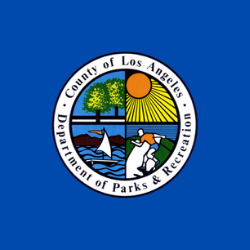
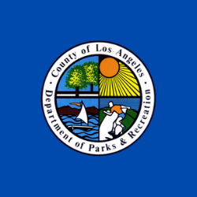
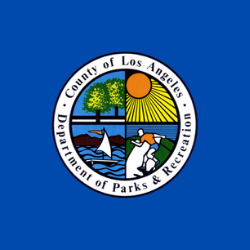

Ethan Kwong
Hello, My name is Ethan Kwong. I am a first year Pre-Business Student at the University of California Riverside. I am interested in pursuing a career in the Technology Industry with an emphasis on Cyber Security. I hope that in my years during college will help me better understand how the world works with the intergration of the internet.
I have always been interested with computers for my whole life and took many coding classes in middle school and was so eager to learn, I was able to take AP Computer Science Principles as a freshman in highschool and as well as AP Computer Science A and learned how to code with Java. As I embark on my college journey, I am eager to leverage my time at UC Riverside to deepen my understanding of technology and its integration with the internet. I am excited to explore coursework in cybersecurity, computer science, and business, with a focus on acquiring the knowledge and skills necessary to thrive in the technology industry.
All my life, I have been able to commit my entire soul to any project that I have been tasked with completing in an amount of time that would be acceptable in the corporate world. I am able to work well with anyone and strive to be a encouraging leader. Looking ahead, I aspire to become not only a skilled technologist but also a supportive leader who inspires others to reach their full potential. I am eager to seize every opportunity for growth and learning during my time at UC Riverside, knowing that each experience will shape me into the future professional I aspire to be.
Experience
Model Student
• 4.2 GPA during High School
• Vice President of the Cyber Security Team
• Honors Student for all 4 years
Volunteer Worker
• Helped manage events at a local park for the community
• Manual Labor with moving structures and interacting with the children of the community
HOSA Member during High School
• Learned and became proficent in Forensic Science
• Went to Sacramento, California to participate in Semi-final competition
• Helped fundraise for the Team by selling chococlate and hosting restaurant fundraisers
• Learned proper lab skills and became proficent in DNA forensic science.
Education
University of California Riverside
Portfolio
 



